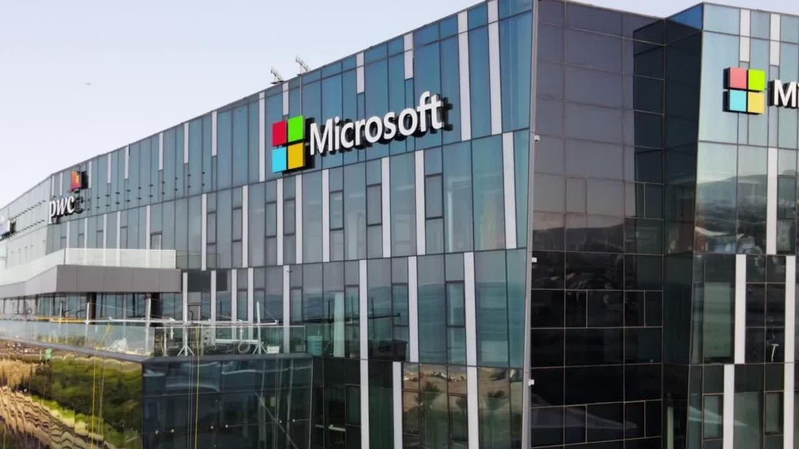

Microsoft - Lider Mundial
es una corporación tecnológica multinacional estadounidense con sede en Redmond, Washington. Los productos de software más conocidos de Microsoft son la línea de sistemas operativos Microsoft Windows, el conjunto de aplicaciones de productividad Microsoft 365, el motor de búsqueda Microsoft Bing y el navegador web Microsoft Edge. Sus productos de hardware emblemáticos son las consolas de videojuegos Xbox y la línea de computadoras personales con pantalla táctil Microsoft Surface. Microsoft ocupó el puesto 14 en la clasificación Fortune 500 de 2022 de las corporaciones más grandes de Estados Unidos por ingresos totales; era el mayor fabricante de software del mundo por ingresos en 2022..